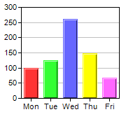
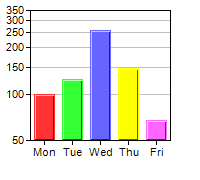

This example demonstrates using a log scale axis versus a linear scale axis.
In ChartDirector, log scale axis can be configured using Axis.setLogScale, Axis.setLogScale2 or Axis.setLogScale3.
ChartDirector 7.1 (C++ Edition)
Log Scale Axis


Source Code Listing
#include "chartdir.h"
void createChart(int chartIndex, const char *filename)
{
// The data for the chart
double data[] = {100, 125, 260, 147, 67};
const int data_size = (int)(sizeof(data)/sizeof(*data));
const char* labels[] = {"Mon", "Tue", "Wed", "Thu", "Fri"};
const int labels_size = (int)(sizeof(labels)/sizeof(*labels));
// Create a XYChart object of size 200 x 180 pixels
XYChart* c = new XYChart(200, 180);
// Set the plot area at (30, 10) and of size 140 x 130 pixels
c->setPlotArea(30, 10, 140, 130);
// Ise log scale axis if required
if (chartIndex == 1) {
c->yAxis()->setLogScale();
}
// Set the labels on the x axis
c->xAxis()->setLabels(StringArray(labels, labels_size));
// Add a color bar layer using the given data. Use a 1 pixel 3D border for the bars.
c->addBarLayer(DoubleArray(data, data_size), IntArray(0, 0))->setBorderColor(-1, 1);
// Output the chart
c->makeChart(filename);
//free up resources
delete c;
}
int main(int argc, char *argv[])
{
createChart(0, "logaxis0.png");
createChart(1, "logaxis1.png");
return 0;
}